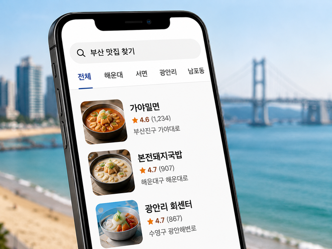
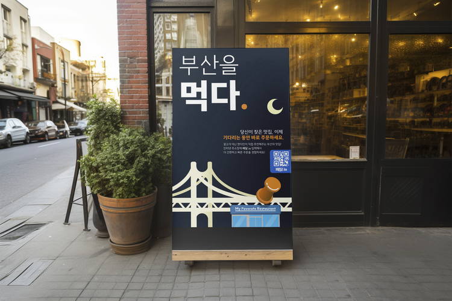

배달.io는 오직 부산 맛집 탐색에 최적화된 검색 경험을 제공합니다.
위치 확인부터 실제 리뷰와 주문까지
오로지 하나의 플랫폼에서 자연스럽게 이어집니다.
배달.io는 광고보다 실제 이용자의 경험을 우선합니다.
맛집을 다녀간 고객님의 신뢰도가 높은 리뷰를 기반으로
부산의 진짜 맛집을 발견할 수 있습니다.
배달.io는 앱 설치 없이 PC와 모바일에서 동일한 서비스를 제공합니다.
웨이팅 중에는 QR코드로 간편하게 메뉴를 확인하고 미리 주문하여
대기 시간을 줄이고 더욱 편리하게 이용할 수 있습니다.

부산 지역 맛집만을 위한 정확하고 빠른 검색, 맛집의 위치와 리뷰, 인기 정보를 한 눈에 확인하세요.

검색부터 주문까지 한 번에! 앱 설치 없이 웹으로 간편하게 주문하고, 웨이팅 중 QR로 미리 주문하여 대기시간을 줄이세요.
메뉴 관리부터 주문 접수 및 매출 분석까지! 사장님의 맛집 운영을 더욱 쉽고 효율적으로 만들어 드립니다.
저희가 하는 일을 자세히 알고 싶으신가요?
소식으로 이동 ▶